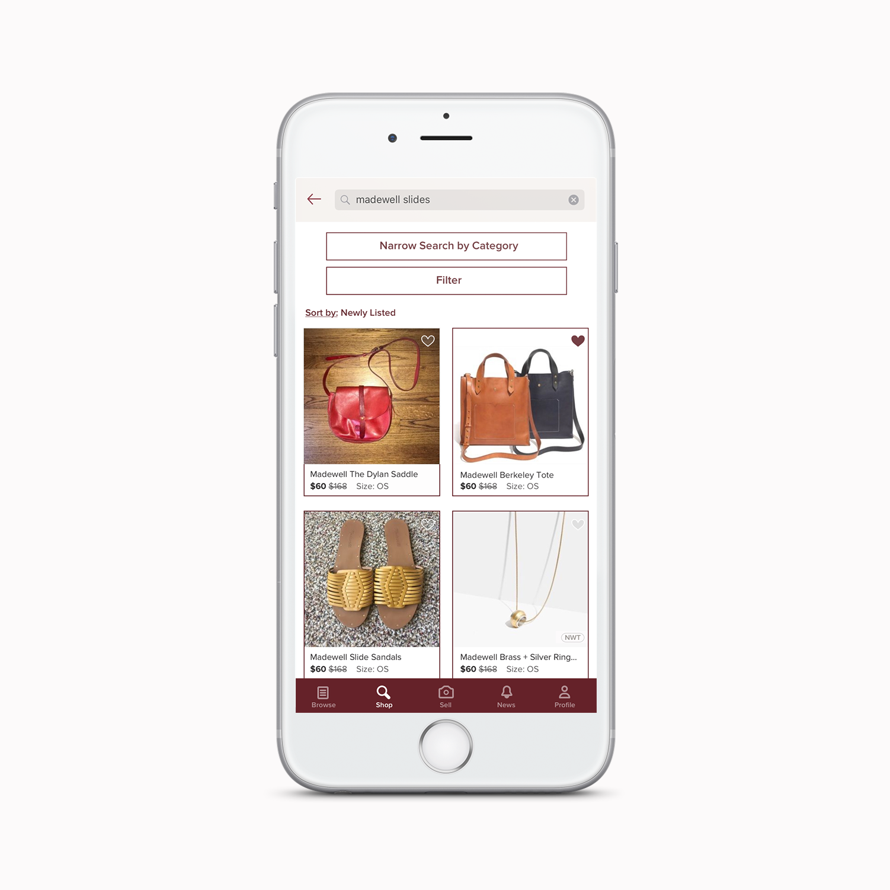
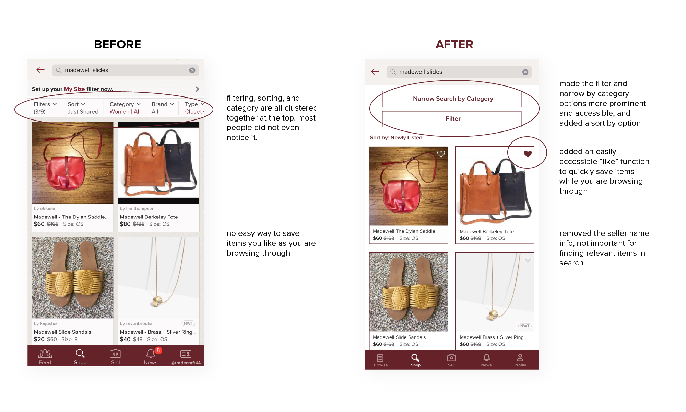
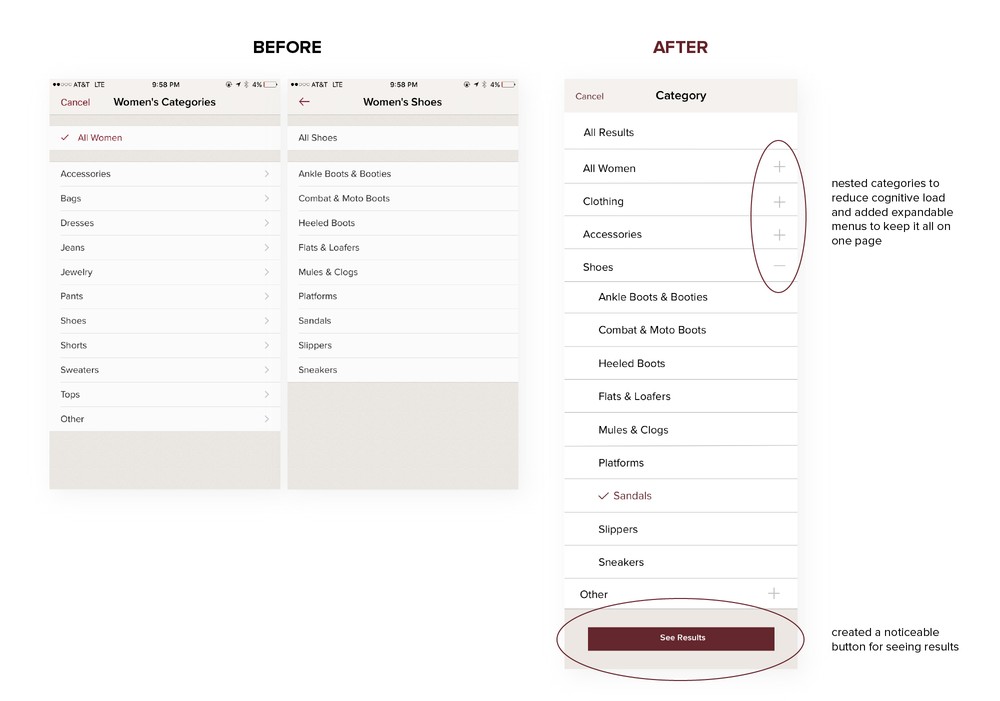
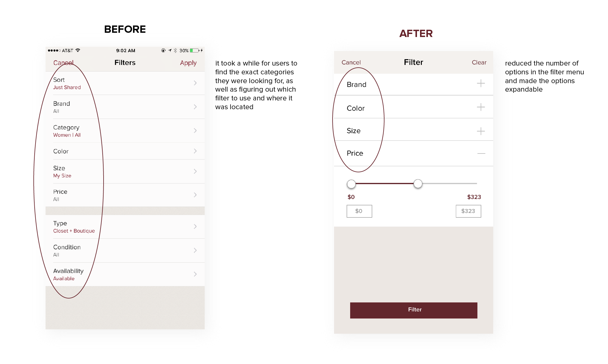

Poshmark Usability Case Study
Improving search functionality to better match buyers and sellers.
Please note, I do not work for, nor am I affiliated with, Poshmark.
Background
Poshmark, a platform for buying and selling clothing, cuts a deal on every transaction made in the marketplace, so it’s in their best interest as well as the users to make this process as easy and well-matched as possible. As a user, I've felt like the buying and selling process could use some improving, so I set out to uncover some of the more salient usability issues.
Guerrilla Testing

I conducted a guerilla usability test with 5 randomly selected strangers (2 familiar with the app and 3 unfamiliar with the app). The task was to search for an item they've been wanting to purchase on the app.
Pain Points
Most of the findings were around not being able to find relevant items with search, confusion over the purpose of the feed, and figuring out how to filter results easily.

I plotted the groupings on a 2x2 matrix of importance to the business vs. importance to users, with the upper right quadrant being the most meaningful issues to solve. I then ranked the issues to solve by importance.

Proto-Personas
My two main personas were that of a typical seller and a typical buyer. Without robust data about or interviews with a lot of end-users, I created lightweight provisional personas based on some assumptions and general insights. In the future, with more feedback or available research data, I would validate and refine my personas and course-correct my assumptions.

Using the buyer persona, I brainstormed situations, motivations, and outcomes with an USMO exercise, then mapped them out with job stories.

Based on my research, the two most important issues to solve were:
- Searching and finding relevant options
- Easily filtering and sorting results
Before and After
The biggest changes were to the “shop” page in the app, after the user has entered a search query. Because people were having trouble filtering their results, I made the narrow search and filter options more prominent and accessible, to make the process of finding relevant items as easy as possible.

For the “narrow search by category” function, I used broader categories for people to choose from initially to make it easier to find the category they are looking for, and then made the menus expandable to keep it all on the same page rather than taking the user through multiple screens. I added a clear “see results” button that can be pressed at any time, giving the user the option to define the category at any stage rather than having to filter down through categories.


Results
When testing my final prototype, it was clear that the process of searching and filtering was much more straightforward than it was originally. However, it was difficult to assess whether or not the user could find more relevant results since the prototype was limited in its functionality. Going forward, I want to be sure about defining my hypothesis and success/failure conditions. Although I have some qualitative results for the search experience being easier to navigate, I would like to be able to test it more tangibly. When testing functionality, I would isolate each change to figure out which one had the most impact, rather than changing multiple features and testing it all at once.
Final Prototype